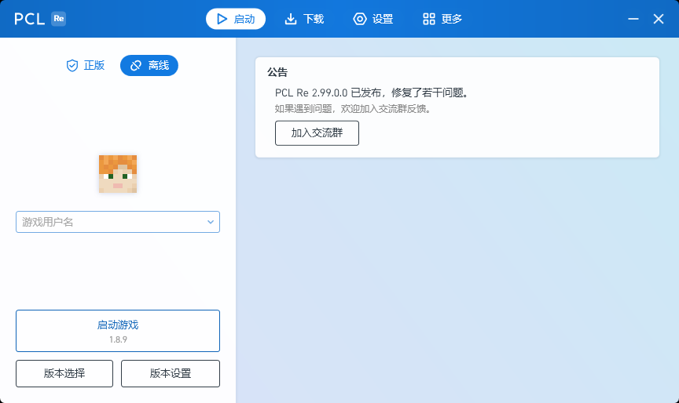
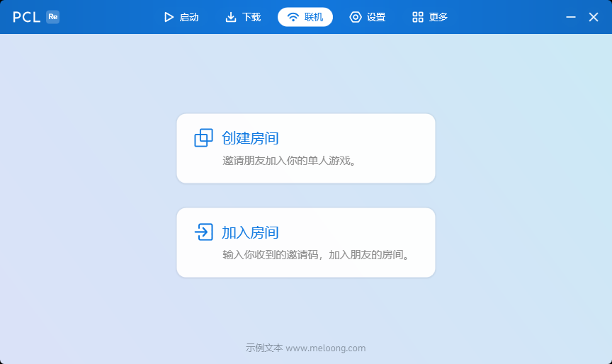

01 / GAME VERSIONS
想玩的版本，
随时出发。
浏览、下载 Minecraft 游戏版本，安装 Forge、NeoForge 或 Fabric。在版本管理里切换你的下一站。
查看版本管理界面MINECRAFT LAUNCHER, REIMAGINED
PCL Re，一个让冒险轻松开始的 Minecraft 启动器。
下载游戏，管理 Mod、光影与整合包，
再邀请朋友，一起走进下一段旅程。
适用于 Windows · 基于 PCL 2 开源代码

01 / PLAY IT YOUR WAY
原版的纯粹，模组的丰富，光影的惊艳。
你喜欢的玩法，都有一个顺手的开始。
浏览、下载 Minecraft 游戏版本，安装 Forge、NeoForge 或 Fabric。在版本管理里切换你的下一站。
查看版本管理界面搜索、下载和管理 Mod 与光影，也能发现资源包与数据包。新的玩法、新的风景，由你搭配。
Mod · 光影包 · 资源包 · 数据包下载、导入与管理整合包，从现成的搭配开始冒险。轻松切换不同的游戏实例，把喜欢的世界留在身边。
在线下载，也支持本地导入02 / BETTER WITH FRIENDS
从一个人的生存，到一群人的冒险。
PCL Re 内置联机入口，用邀请码把朋友带进来。
进入「联机」，由房主创建联机房间。
把房间的邀请码发送给一起玩的朋友。
好友输入邀请码加入，开启共同的冒险。
创建联机房间时，需要以管理员身份运行启动器。

同一个世界，
多几份快乐。
03 / BEFORE YOU PLAY
关于启动器的几个小问题，
在这里找到答案。
PCL Re 是基于 PCL 2 开源代码的第三方 Minecraft 启动器，面向 Windows。它提供游戏版本下载与管理、Mod / 光影 / 整合包的下载与管理，以及好友联机等功能。
可以。在启动器的「下载」页面选择 Minecraft 游戏版本，或搜索并下载整合包；已有的本地整合包也可以导入使用。
可以。你可以在启动器中搜索、下载和管理 Mod 与光影包，也能下载资源包和数据包。选择时请留意资源适用的游戏版本及所需的加载器。
在「联机」页面创建房间，并把邀请码分享给朋友；朋友输入邀请码即可加入房间。创建房间需要管理员权限。一起游玩前，请确认双方使用的游戏版本和 Mod 配置相符。
点击页面上的「下载 PCL Re」或「立即下载」，即可前往 123 云盘下载页 ↗ 获取 Windows 版本。使用前请查看下载页中的文件和相关说明。
不包含。PCL Re 是启动和管理游戏的工具，不提供 Minecraft 游戏授权。请使用你自己的游戏账号，并遵守游戏的使用条款。
YOUR NEXT WORLD IS WAITING
带上你的想象，剩下的交给 PCL Re。
下载 PCL Re Windows · 前往 123 云盘下载